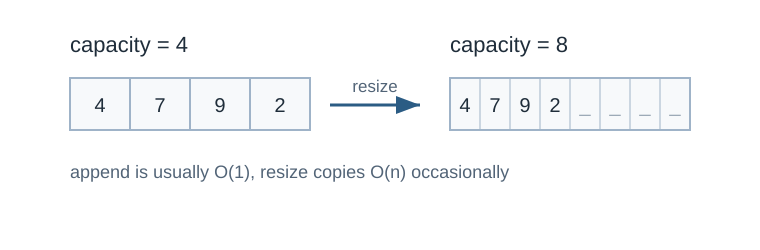
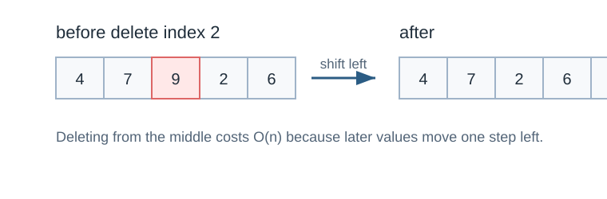

Dynamic Array
คำอธิบาย
Array ธรรมดาต้องกำหนดขนาดตอนประกาศ Dynamic array คือ
array ที่ขยายขนาดได้เองเมื่อใส่ข้อมูลเพิ่ม ใน C++ คือ vector นั่นเอง
ภายในจะเก็บค่าสองค่า
size: จำนวนข้อมูลที่ใส่อยู่จริง
capacity: จำนวนช่องที่จองไว้แล้ว (\geq size)
การเพิ่มข้อมูล (push_back)
ถ้ายังมีช่องว่าง (size < capacity) ใส่ข้อมูลท้ายสุดได้ทันทีใน O(1)
ถ้าเต็มแล้ว ต้อง จองพื้นที่ใหม่ที่ใหญ่ขึ้น คัดลอกข้อมูลเดิมทั้งหมดไป แล้วคืนพื้นที่เก่า ครั้งนั้นใช้ O(n)

Dynamic array resize. Original diagram for this guide.
ทำไมต้องขยายเป็นสองเท่า
ถ้าขยายทีละ 1 ช่อง ทุกการ push จะต้องคัดลอกทั้ง array รวม 1 + 2 + \cdots + (n - 1) = \frac{n(n - 1)}{2} ครั้ง เป็น O\left( n^{2} \right) แต่ถ้าขยายเป็น สองเท่า การคัดลอกจะเกิดเฉพาะตอน size เป็น 1,2,4,8,\cdots รวม 1 + 2 + 4 + \cdots < 2n ครั้ง
ดังนั้นการ push n ครั้งใช้เวลารวม O(n) หรือ เฉลี่ย O(1) ต่อครั้ง เรียกว่า amortized O(1) แม้บางครั้งจะช้า แต่นาน ๆ ครั้งเท่านั้น
ลองกด push แล้วสังเกตจำนวนการคัดลอกเฉลี่ยต่อครั้ง จากนั้นเปลี่ยนเป็น “เพิ่มทีละ 1 ช่อง” แล้ว push 100 ตัวเพื่อเทียบ
การลบข้อมูล
ลบตัวท้าย (
pop_back) เป็น O(1) แค่ลด sizeลบตรงกลางต้องเลื่อนทุกตัวที่อยู่หลังมาแทนที่ เป็น O(n)
ในทางทฤษฎีลด capacity เมื่อข้อมูลเหลือน้อยได้ แต่ในการแข่งขันไม่จำเป็น

Deleting an array element by shifting later elements left. Original diagram for this guide.
เขียน dynamic array เอง
#include <bits/stdc++.h>
using namespace std;
int cnt = 0; // size
int cap = 1; // capacity
int* A = new int[cap];
void add(int x) {
if (cnt == cap) {
cap *= 2;
int* bigger = new int[cap];
for (int i = 0; i < cnt; i++) bigger[i] = A[i];
delete[] A; // คืนพื้นที่ที่จองด้วย new[] ต้องใช้ delete[]
A = bigger;
}
A[cnt++] = x;
}
void removeLast() { cnt--; }
void removeAt(int j) { // เลื่อนตัวหลัง j มาทางซ้าย: O(n)
for (int i = j; i + 1 < cnt; i++) A[i] = A[i + 1];
cnt--;
}
void print() {
printf("cap = %d, cnt = %d:", cap, cnt);
for (int i = 0; i < cnt; i++) printf(" %d", A[i]);
printf("\n");
}
int main() {
for (int x = 1; x <= 5; x++) add(x);
print(); // cap = 8, cnt = 5: 1 2 3 4 5
removeLast();
removeAt(1);
print(); // cap = 8, cnt = 3: 1 3 4
}vector ใน STL
ในการแข่งขันใช้ vector ได้เลย มีพฤติกรรมเดียวกันทุกอย่าง
คำสั่ง |
เวลา |
|---|---|
|
amortized O(1) |
|
O(1) |
|
O(n) |
|
O(1) |
|
จอง capacity ล่วงหน้า ไม่ต้องขยายระหว่างทาง |
โจทย์ฝึกฝน (Practice Problems)
ลองทำโจทย์เหล่านี้จาก CSES Problem Set เพื่อฝึกใช้ทักษะจากบทนี้ โดยเริ่มจากโจทย์ที่ง่ายที่สุดก่อน
โจทย์เพิ่มเติม: CSES Problem Set และ programming.in.th